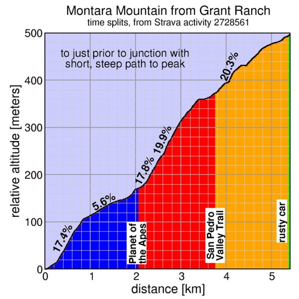

Cover your head, not your ears...
Sorry, folks! Our insurance requires all riders wear helmets during the climb, and we follow the USA Cycling rule against ear buds or other head phones. Rock to tunes before the climb, perhaps, but we need riders to pay attention to what's happening during the climb...
Directions
You're on your own this week! It's GPS timed with riders doing the route on their own any time during Saturday.
Feel free to ride with others, but groups must be smaller than 20 riders, per Open Space regulations. There are other trail users, so please follow the rules of the trail, yielding to all pedestrians and equestrians. If you're forced to come to a complete stop to yield right of way, let us know. If it's early enough in the ride you're not too fatigued, you can also always head back down the hill and try again if conditions aren't right for a fast attempt the first time.
Note this is an optional climb (you only need five results during the series to get a maximal score). Please use discretion and courtesy in climbing the hill! You're responsible for your own decisions with regard to weather and conditions.
Getting to the start
Perhaps the best way to the start is Highway 1 north of Half Moon Bay and Montara, south of Pacifica and Devil's Slide. Here's a streetview of the trailhead. There's limited trailhead parking, with more parking slightly south in Montara. From Montara, instead of riding up Highway 1, you can take the Farralone Cutoff to San Pedreo Mountain Road Trail then turn left. A trailmap is here: Farralone is point 1, the Hwy 1 trailhead is point 2, and the start is near point 5.
Unlike most Low-Keys, this one has public transit options. From Daly City BART, you can take the SamTrans 110 bus to Linda Mar (32 minutes), then ride through the new Devil's Slide bypass tunnel to the start.
Route Description
Pay careful attention to the BikeMap. There's also a Strava route, but start and finish placement are less precise. Satellite view is best (there's a pull-down in the upper right of the map: select "Google satellite"). The start is at a junction with a building. We take a trail to the right. The actual start is the junction past the building but you're want to start a bit early to make sure you're moving when you cross the start line, and to account for possible position errors from GPS.
The route follows the dominant trail from there. There are no sharp turns: go with the flow. In particular there is a junction with the another fireroad, the less steep option from where you started. Don't go there: continue climbing on the main trail (bearing right).
A bit further, you'll encounter a single-track trail descending to the left down steps and with a sign that says "no bicycles" and prominent tire tracks in the dirt. This is a very nice hiking route to San Pedro Valley Park, but save it for later. Today you continue up the main trail, which climbs steeply ahead.
After a substantial amount of further climbing, you may notice a rusted car on the right of the trail. After you've recovered from the shock of such an unexpected encounter, it's time to sprint! You're almost to the finish. After a short rise, you come with a junction to a trail to a peak on the left: the West Peak. Don't go there. The finish line is at this junction. Keep riding ahead to make sure you've cleanly crossed the line. If you were to turn left to the West Peak access road, which you won't do, you might not cross the virtual finish line.
There's a Strava segment to the top of the following peak: the East Peak. You've finished the Low-Key, but you may as well log this Strava segment. Turn left onto the peak access road before the fence blocking this trail, then bear right to reach the top.
So in summary: start to the right, then keep climbing until you can't climb any more. If you crash into the gate blocking access to the descent down the opposite slope of the mountain then you know you've crossed the finish.
Alternate, longer route
There's an alternate start which is longer, but less steep, then the main route. The most difficult portion of the course, in the middle, is unchanged, however. But for those who will be walking the steepest portions can minimize total walking going this way. Strava route (alternate course).
Split times
Since this week is a GPS week, that provides plenty of opportunity for split times. We have the following split times defined for today's route:
 - the start sprint (0 to 118 meters): This is the opening section at the start. GPS signals aren't great for timing sprints, but this segment is here as a check against riders who stop on the wrong side of the virtual start line.
- start to Planet of the Apes (0 to 2069 meters): The first real time split of the route. This goes from the start line to Old San Pedro Mountain Road, the "Planet of the Apes" route. It includes a section of approximately 0.3 miles sustaining approximately 17.4%, with sections even steeper. This is merely warm-up for what follows, however. There's a bit of recovery before a final short steep bit to the end of this segment.
- Planet of the Apes to San Pedro Valley Trail head (2069 to 3750 meters): This is easily the most challenging section. After a very short respite from the preceding short steep grade, it launches into an incredibly tough 0.7 miles, the first part sustaining around 18%, the second a super-painful 20%. Nasty, nasty stuff. Even with data smoothing (σ = 30 meters) the peak grade here is a leg-ripping 23.5%. The top rider on this segment will probably be the fastest for the full climb. No faking this one... The segment ends at a plateau after the grade relends from 18% to "only" 12%: the trail head is fairly obvious on the left.
- San Pedro Valley Trail head to rusty car (3750 to 5370 meters): There's some break from the sustained steepness here, but there's still some short, steep bits, including a tough section around 150 meters long averaging almost 20%. Watch for the rusty car on the right.
- rusty car to finish (5370 to 5405 meters): This is the end, the final 35 meters, with just one very short climb before the finish, which we should have marked. If you're the fastest on this section, you probably didn't ride hard enough.
The descent
Be super-careful descending back to the start: there will be Low-Keyers as well as other trail users on the trail. Anyone averaging more than 15 mph for significant portions of the descent will be given a time penalty. Take your time, enjoy the views, and cheer on climbers experiencing the pain you have already overcome.
Restarts
Feel free to return to the start line and start the climb again, or even if you are particularly sicko, repeat the whole climb multiple climbs. The timing code is smart enough to assign your time as the shortest time from the beginning to the end which passes through the check-points in order. So no need to reset a Garmin or phone app before recrossing the start line. Just make your you start sufficiently behind (at least 10 meters) the start line so that position errors won't result in the code concluding you didn't actually cross it.
We don't need volunteers as much this week, since it's a self-ride, although we can still use help the day before marking the route. You can volunteer to help using our volunteer form! Thanks!!!
The Low-Key Way
Low-Key is all about a group of friends riding up a hill together.
It's like any other informal group ride, except we time you to the top
and report the results on our web site. But we have no road closures,
no lead vehicle, no follow vehicle. We are traffic, sharing the roads
with other traffic, following the laws and courtesy which applies to
traffic. Think of it as a human-assisted Strava.
We're each responsible for our own actions out there, on and off the
bike, both as users of the road as as courteous visitors to the
neighborhoods we pass through. "Ceci n'est pas un race".
"Get your ass up that hill!" -- Kevin Winterfield, Fovnder
Dan Connelly